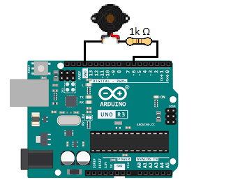
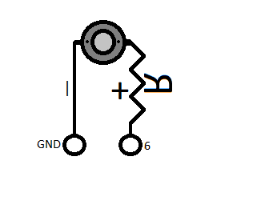

Click the pin on the image to see details here.
Welcome to Learn Arduino visually — even without owning one.
What is this?
A visual Arduino guide that teaches hardware + code together.
How is it different?You see the pin, the wire, and the code at the same time.
What do I need?Nothing. No Arduino, no installs, works offline.
Start in under 30 seconds:
Explore the Arduino BoardThis website is a visual Arduino guide designed to help you understand both hardware and code at the same time. Instead of reading long manuals, you learn by clicking, exploring, and seeing how everything connects.
The guide focuses on clarity, speed, and simplicity. Everything is contained in a single, fast-loading website that works offline and runs even on older computers.
For advanced users
- Pin function overlays (PWM, SPI, I²C, UART)
- Protocol-level explanations
- Code → hardware signal flow
- Real-world usage patterns
What You Will Learn
- What each Arduino pin does and when to use it
- How code controls real electronic components
- How to connect LEDs, buttons, sensors, motors, and displays
- How Arduino communicates using Serial, I²C, and SPI
How This Guide Works
The guide is built around visual interaction. You can click on pins, open examples, and read explanations directly next to the hardware they belong to.
- Click pins on the board to see their purpose
- Select pin groups to highlight related functionality
- Open code examples with clear, line-by-line explanations
- View wiring diagrams drawn in a simple MS Paint style
Who This Guide Is For
- Beginners learning Arduino for the first time
- People who prefer visual learning over long documentation
- Students, hobbyists, and self-taught makers
- Anyone who wants a fast, offline Arduino reference
Why This Guide Is Different
Most Arduino tutorials explain code or hardware separately. This guide shows both together, so you understand why something works — not just how.
No frameworks. No heavy scripts. No clutter. Just clear explanations, visual learning, and practical examples.
Use the menu to explore the board, pins, examples, and wiring diagrams. Start anywhere and learn at your own pace.
About the Arduino Board
The Arduino Uno is a beginner-friendly microcontroller board designed to interact with the physical world. It can read sensors, control outputs, and run a program continuously without an operating system.
At its core is the ATmega328P microcontroller. Unlike a PC CPU, this chip runs a single sketch in a loop and directly controls hardware pins.

Think of Arduino as a tiny computer built only to control electronics. No apps, no windows — just code and signals.
Arduino Uno Specs
MicrocontrollerATmega328P
Clock Speed16 MHz
Flash32 KB
SRAM2 KB
EEPROM1 KB
Digital Pins14 (6 PWM)
Analog Inputs6
Operating Voltage5V
PowerUSB / 7–12V
What the Uno Is Best For
- Learning electronics & microcontrollers
- Simple robots, sensors, LEDs, motors
- Serial, I²C, SPI communication
- Offline embedded projects
Arduino Family Comparison
| Board | CPU | Clock | Flash | SRAM | Voltage | Best For |
|---|---|---|---|---|---|---|
| Uno | ATmega328P | 16 MHz | 32 KB | 2 KB | 5V | Beginners, basic projects |
| Nano | ATmega328P | 16 MHz | 32 KB | 2 KB | 5V | Small builds, breadboards |
| Mega | ATmega2560 | 16 MHz | 256 KB | 8 KB | 5V | Big projects, many pins |
| Leonardo | ATmega32u4 | 16 MHz | 32 KB | 2.5 KB | 5V | USB HID, keyboards |
| ESP32 | Dual-core Xtensa | 240 MHz | 4 MB | 520 KB | 3.3V | WiFi, Bluetooth, IoT |
Arduino Board – Hardware & Components
This section explains the physical parts of an Arduino board and how real components connect to it. All diagrams are simple, clear, and approachable, matching real wiring.
Microcontroller (The Brain)
The microcontroller is the main chip on the Arduino. On the Arduino Uno, it is the ATmega328P.
- Executes your program line by line
- Runs the loop() function continuously
- Reads inputs from pins
- Controls outputs like LEDs and motors

Click on each section to learn more about important Arduino hardware components.
Power System
The Arduino can be powered in multiple ways:
- USB – 5V from computer
- VIN – 7–12V external supply (raw input voltage, regulated onboard)
- 5V pin – regulated output (limited current)
- GND – ground (must always be connected)

Important: Never power motors directly from Arduino 5V.
Why: Motors draw high current and can create electrical noise — use a driver and a diode.
Rule: Arduino controls signals, not power.
Digital Pins (0–13)
Digital pins can be either ON (HIGH) or OFF (LOW). See the LED example on the Examples page.
- Used for buttons, LEDs, relays
- Pins with ~ support PWM
- Pin 13 has a built-in LED

Analog Pins (A0–A5)
Analog pins read voltage levels, not just ON/OFF.
- Range: 0–5V
- Values: 0–1023 (10-bit resolution)
- A4 = SDA, A5 = SCL (I²C)

Resistors
Resistors limit current and protect components.
- Used with LEDs
- Typical values: 220Ω, 330Ω, 1kΩ, 10kΩ
- Direction does NOT matter
- Can be placed on either side of an LED

Capacitors
Capacitors smooth voltage and reduce noise.
- Ceramic: no polarity
- Electrolytic: Capacitors are polarized; + and − terminals matter
- Electrolytic: Connecting electrolytic capacitors incorrectly can damage them.
- Used near motors and power

Motors (DC & Servo)
Motors draw high current and must NOT be connected directly to pins.
- Use motor driver or transistor
- External battery required
- Common GND with Arduino
- Use flyback diode for DC motors

Sensors
Sensors convert physical values into electrical signals.
- Distance sensors
- Temperature sensors
- Light sensors

Arduino Board Hardware and Components Visual
This page connects real wiring with hardware concepts. Open an example on the right to see how physical components connect to the Arduino board.
Arduino boards are built around a microcontroller and include power regulation, communication pins, and headers for expansion.
Core Parts
- Microcontroller (ATmega328P)
- USB interface
- Voltage regulator
- Pin headers
Components connect directly to these pins using jumper wires or breadboards.
More about Components
The longer pin of LEDs is the (+) positive end.
The shorter pin of LEDs is the (−) negative end and should always be connected to the Arduino's GND (−).
You can connect all negative ends of LEDs, displays, and even motors together to one GND pin. Note: It is recommended to connect all LEDs, all displays, or one or two motors to a single GND—not all devices combined on the same GND line.
Common Wiring Examples
These examples show how hardware connects in real projects. Click to expand and study each one. Hover or click to zoom in.
Wiring LED to the Board
Click on the Blink LED example.
LED Wiring
LED with current-limiting resistor.


Wiring Explained
Connect pin 13 to one end of the resistor.
Then connect the positive end of the LED (longer leg) to the other end of the 220Ω resistor. (R=220Ω)
Finally, connect the shorter leg of the LED to the Arduino's common GND.
Wiring Multiple LEDs to the Board
Click on the Multi LED example
Multiple LED Wiring
LEDs with current-limiting resistors..


Wiring Explained
Connect pin 13 to one end of the first resistor. (R1=220Ω)
Connect pin 12 to one end of the second resistor. (R2=220Ω)
Connect pin 11 to one end of the third resistor. (R3=220Ω)
All positive ends of the LEDs must go through their respective 220Ω resistors.
Then connect all the negative legs (one per LED) together to a common GND on the Arduino.
OLED 4-Pin Wiring Layout
Click on the Oled 4-Pin Display example.
Screen (I²C)
OLED / LCD using SDA and SCL lines.


Wiring Explained
Connect the VSS to the 3.3v Power pin (Or to 5v depending on you oled model safest to go to 3.3v)
Why: the VSS on the oled might be 3.3v and you don't risk damaging your screen on 3.3v IF it dosent power on connect it to 5v!
Connect GND to Arduino GND! ->(Don't forget to connect it)
Connect SDA to A4 and SCL to A5 IF you connect it incorectly you risk damaging you oled be careful.
Buzzer+Arduino Wiring Layout
Click on the Buzzer/Speaker example.
Buzzer (Passive)
Buzzer Connect lines.


Wiring Explained
Connect the Pin 6 to one end of a 1k resistor (lower the resistance if it dosen't work).
Why: only passive buzzers need resistors active ones don't need resistors first try with a resistor then a lower one then without any!
Connect The end of the resistor (if you need to use one) to the + of the buzzer/speaker
Connect GND to Arduino GND! ->(Don't forget to connect it)
DC Motor
Motor driver required.

Stepper Motor
Two-stage wiring.

Arduino Uno Board Image
3D Model Below: Zoom/Drag/Look Around to see it better!
Arduino Explained
Arduino is an open-source electronics platform based on easy-to-use hardware and software. It is used to read sensors, control motors, displays, lights, and communicate with other devices.
🧠 What is Arduino?
An Arduino board is a small computer called a microcontroller. Unlike a PC or laptop, it does not run an operating system. Instead, it runs one program over and over again and directly controls electronic components connected to it.
Arduino is designed to interact with the real world. It can sense its environment, make decisions, and react instantly without needing a keyboard, mouse, or screen.
- Reads inputs – buttons, sensors, joysticks, distance sensors
- Processes logic – your code decides what should happen
- Controls outputs – LEDs, motors, buzzers, relays, displays
This makes Arduino ideal for learning electronics, building projects, automating tasks, and creating interactive devices.
🧩 Main Components on the Board:
- Microcontroller (ATmega328P) – the brain
- USB Port – programming and power
- Voltage Regulator – keeps voltage safe
- Crystal Oscillator – timing (16 MHz)
- Capacitors – smooth power (+ / − matters)
- Resistors – limit current
📍 Pin Layout
Arduino Uno pins are grouped by function:
Digital Pins (0–13)
- Read HIGH / LOW
- Some support PWM (~)
- Pin 0 & 1 are used for USB serial
- Note: Digital pins can safely supply ~20mA each (40mA absolute max), and total current from all I/O pins should not exceed ~200mA.
Analog Pins (A0–A5)
- Read voltage (0–5V by default)
- Resolution: 10-bit (0–1023)
- AREF can change reference voltage
- Mapped to values 0–1023
- A4 = SDA, A5 = SCL (I²C)
Power Pins
- 5V – regulated output (limited current, do NOT power motors)
- 3.3V – low power devices
- GND – ground
- VIN – external power input
D0–D13 → Digital
A0–A5 → Analog
5V, 3.3V, GND → Power
🔌 Communication Methods
-
UART (Serial) – Pins 0 (RX) & 1 (TX)
Used for uploading code, debugging, and communicating with PCs or Bluetooth modules. -
I²C – SDA & SCL (2 wires, shared bus)
Connect many devices like OLEDs, sensors, RTCs using addresses. -
SPI – SS, MOSI, MISO, SCK
Pins on Uno:- SS → D10
- MOSI → D11
- MISO → D12
- SCK → D13
Tip: I²C is easiest for beginners; SPI is fastest.
💾 Memory Inside Arduino
-
Flash (32 KB) – stores your program
Code stays even when power is off. -
SRAM (2 KB) – working memory
Variables, arrays, and calculations while running. -
EEPROM (1 KB) – long-term storage
Save settings, scores, or calibration data.
Warning: Running out of SRAM causes crashes.
⚡ Powering Arduino
- USB (5V) – easiest and safest for beginners
- VIN – external power input (recommended 7–12V)
- 5V Pin – direct regulated power (advanced users)
Never exceed voltage limits.
Motors and high-power devices need separate power.
💻 Software & Downloads
- Arduino IDE – official graphical programming tool
Easy to use, recommended for beginners. - Arduino CLI – command line interface (CMD / Terminal)
Advanced, scriptable, fast, and very powerful. - Works on Windows, Linux, macOS
- Uses a C / C++ style language compiled before upload
- Libraries add support for displays, sensors, motors, storage
- Commands:
arduino-cli.exe compile --fqbn arduino:avr:uno blink arduino-cli.exe upload -p COM8 --fqbn arduino:avr:uno blink
Official Downloads:
- 🧰 Arduino IDE: arduino.cc/en/software
- ⌨️ Arduino CLI: arduino-cli documentation
Why Arduino CLI / CMD is rarely mentioned:
- Arduino focuses on beginners and education
- CLI requires understanding paths, boards, and toolchains
- No visual editor or built-in serial monitor by default
- Can be confusing without prior programming experience
However: Using Arduino from CMD is not wrong. It is actually more professional and commonly used in:
- Automation and scripting
- Build systems and CI pipelines
- Minimal systems (no GUI)
- Advanced or custom workflows
Code is compiled and uploaded via USB, then runs automatically when powered.
Tip: The Arduino IDE internally uses the same tools as Arduino CLI.
🛠️ What Can You Build?
- Robots and drones
- RC cars and controllers
- Mini games and consoles
- Smart home systems
- Security alarms
- Learning computers
- Data loggers and monitors
⚠️ Common Beginner Mistakes
- Connecting motors directly to Arduino pins
- Forgetting to connect GND
- Overloading the 5V pin
- Using pins 0/1 while uploading code
- Powering sensors with the wrong voltage
- Short-circuiting pins with wires
Most Arduino damage happens from power mistakes.
Tip: Click parts on the 3D Arduino to see matching info here.
404 – Page Not Found
The section you tried to open does not exist.